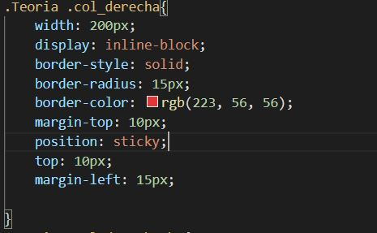

Guía de estilo
Para asegurar la consistencia de las interfaces gráficas de una web es fundamental una guía que pueda seguirse durante el proceso de desarrollo del sitio. Estas guías se llaman guías de estilo.
Las guías de estilo recogen los criterios que deben seguir los desarrolladores de un sitio web para que tenga una apariencia uniforme y atractiva para el usuario.
Desde el punto de vista de los programadores y los diseñadores, estas guías de estilo son esenciales para favorecer el desarrollo de una página web, tanto en el diseño como en un posterior mantenimiento. Es muy importante ya que el mantenimiento puede ser llevado cada vez por una persona.
En las guías de estilo se recogen datos como la gama de colores utilizada, los iconos, la tipografía, el tamaño de letra, etc.
Colores
El color es una cualidad de la materia y de la luz, además es un factor expresivo ya que tiene la cualidad de comunicar y transmitir sentimientos. Por este motivo, el diseñador estudia las dimensiones y los valores del color para poder utilizarlo como instrumento de comunicación.
Psicologia de colores
Gracias a la psicología del color sabemos que los colores son capaces de transmitir emociones y provocar así reacciones en nuestro cerebro.

Colores Fundamentales
Existen tres colores fundamentales, el rojo, el verde y el azul. Un ordenador representa todos los colores combinando estos tres colores fundamentales mediante el sistema RGB. Así pues, definiendo la cantidad de cada uno de los colores tendremos la paleta completa.
Sistemas RGB
El sistema RGB es un modelo con el que es posible representar un color mediante la mezcla de los tres colores de luz primarios, también llamados colores fundamentales.
Aquí tenemos algunos ejemplos de colores representados en RGB

Propiedades del color
Los colores tienen tres propiedades que nos permiten diferenciarlos:
Tono
Es la propiedad que nos permite diferenciar unos colores de otros.Saturación
Es la propiedad que define la intensidad de un color y varía según el nivel de gris que tenga.Brillo
Es la propiedad que define cómo de oscuro o de claro se encuentra un color y varía según el nivel de negro o blanco que tenga respecto al color puro.
Paletas de Colores
Como se ha comentado, definir la gama de colores que se utilizará en una web es fundamental porque puede condicionar la experiencia de los usuarios. Esta gama de colores se puede crear mediante una paleta de colores que nos provea de un grupo de matices y tonalidades que nos ayude a marcar la diferencia entre un diseño alegre, elegante, fiable, sobrio, etc.
Algunos Usos del Color en marcas
Marcas como Cocacola o Netflix utilizan el color rojo ya que se simboliza la excitación, dinamismo y energia, lo que hace mas atractivo a la compra del producto. Otras marcas como Nike utilizan el negro y blanco, ya que el negro simboliza fuerza y el blanco pureza, que es lo esencial en el ambito del deporte.
Uso correcto de colores: La regla del 60/30/10
Esta regla denomina como usar una solo secuencia de tres colores en nuestra web, para tener un diseño simple, pero gustoso al usuario.
Deveremos usar un color dominante, que usaremos en el 60% de la pagina, un color de la misma tonalidad, con menos o mas saturación que usaremos en un 30% de la página y por ultimo un color claro o oscuro deendiendo de los dos anteriores que usaremos en el 10% restante.
Tipografía
La Tipografía, es el tipo de fuente que se utiliza en diseños de interfaces. Al igual que en prensa o literatura se utilizan varias fuentes, en el diseño web ocurre lo mismo.
Encontramos muchos tipos de tipografía que podemos usar, en concreto tenemos varios tipos que son los mas utilizazos a lo largo de la historia:
Serif
Son aqullas cuyos caracteres tiene adorno en los remates. Estos tipos de fuentes resultan muy cargandos al lector por los adornos de los remates, por lo que no son legibles para grandes cantidades de texto.
Como ejemplo tenemos fuentes como Courier o Times New Roman
Sans-Serif
A diferecia de las fuentes serif, estan no tienen adornos en los remates, por ello son las mas utilizadas globalmente para crear páginas web, como ejemplo tenemos la fuente verdana o arial. En esta pagína web estoy usando una fuente sans-serif.
Aqui vamos a ver una imagen de la diferencia entre ambas clases:

Script
Estas fuentes intentan imitar la escritura a mano, ademas sin muy pesadas a la vista, ya que solo se suelen usar para poner nombre en iconos para el logotipo de una empresa o negocio.

Decorativa
Estas son las fuentes cuyo estilos es muy informal, de echo, una unica utilidad que podrian darle a este tipo de fuentes es para paginas enfocadas al público infantil, ya que no tiene mucha legibilidad.

Monoespaciadas
Son aquellas que recogen como base las Sans-Serif y se le añade un poco de espacio entre letra y letra a los caracteres más estrechos como la i o l. Son usados muy frecuentemente al igual que su fuente base.

Iconos
Los iconos son imagenes equeñas que aunque no sean vistosas al usuario con capaces de trasmitir el contenido que contiene la pagina solo con mirarlos. Los iconos mas utilizados son por ejemplo, los iconos de home, papelera o descarga.
Funtes de iconos
Las fuentes de iconos son muy itules para utilizar un conjunto de iconos adecuado segun el tipo de contenidode la página web que estemos creando, los repositoris mas usados son los siguientes:
Bootstrap Glyphicons
Esta página web dispone de un amplio conjunto de iconos. La manera que tiene esta pagina de añadir estos iconos es mediante clases de css con el siguente codigo<span class="glyphicon glyphicon-check"></span>Font Awesome
Esta página además de ofrecer los iconos mas esenciales ofrece un amplio conjunto de imagenes con el que podremos representar cualquier cosa. La manera de incluir estos iconos es similar a la de la anterior página.Ionicons
Esta página ofrece los iconos de las redes sociales como pueden ser Facebook, WhatsApp o Instagram. Para utilizar estos iconos usaremos programas externos a la página web.Octicons
Esto es un descargable de la fuente GitHub. Para utilizarlo usaremos lo siguiente:
Primero ponemos en nuestros repositorio de github los iconos.
Usamos en html el siguiente código:<link rel="stylesheet" href="/octicons/octicons.css">
Para usar el icono usaremo:<span class="octicon octicon-flames"></span>Material Icons
Es un repositorio de iconos en GitHub ofrecido por google para usarse en cualquier plataforma.
Para poder usar este repositorio en html usaremos el siguiente código:<link rel="stylesheet" href="htpps://fonts.googleapis.com/icons?family=Material+Icons">
Para añadir un icono usaremos el código:<i class="material-icons">face</i>
Etiquetas y atributos
<a>
La etiqueta de enlaces es esencial en cualquier página web, tiene como atributos los siguentes:
href
Con este atributos especificamos el enlace al que vamos a ir.target
Especifica como va a abrirse el enlace, con "_self" para abrirlo en la misma ventana o "_blank" para abrirlo en una ventana diferente.title
Nos ayuda a dar un título al enlace, en caso de hacer una lectura de voz de la pagina especificará el título del enlace.
<meter>
Esta etiqueta muestra una barra de progreso todos sus atributos son configurables, podemos añadir un valor por defecto, un mínimo, un máximo o una id por ejemplo. Aqui podemos ver un ejemplo:
<image>
Esta etiqueta nos permite insertar imagenes en la web, consta de un atributo, "crossorigins", que tiene los valores "user-credentials" que manda las credenciales y habilita el CORS o "anonymous" que no manda credenciales pero si habilita el CORS.
Aqui podemos ver un ejemplo:
<video>
Esta etiqueta permite insertar video, podemos especificar la url con "scr", el ancho y largo, si se auto reproduce cn "autoplay", si esta muteado con "muted" y el tipo de video que es con "type". Aqui tenemos un ejemplo de la plataforma youtube:
<audio>
Similar a la etiqueta video, mismo atributos, la diferencia es que cuenta con su propio API. Aqui un ejemplo:
<menu>
Esta etiqueta nos permite añadir un menu, esta etiqueta tiene un sub elemento llamado menuitem, donde se puede especificar su tipo y un label.
Tablas
Las tablas son un elemento que suele usar para mostrar información en la web. La tablas se organizan en filas, la etiqueta <table> consta de etiquetas <tr> que son filas y se componen a su vez de etiquetas <td> que son celdas.
Podemos ademas dividir las tablas por zonas, en cabezera, cuerpo y pie con las siguientes etiquetas:
thead
Agrupa las filas de cabera, las cuales usan <th> en lugar de <td>.tbody
Agrupan las filas de datos y se utilizan las etiquetas <td>.tfoot
Agrupa el pie de tabla y se utilizan las etiquetas <th> o <td>.
Los elementos td y th pueden contener losatributos rowsapn y colspan, estos sirven para que el elemento recoja varias columnas si se trata de colspan o varias filas si se trata de rowspan.
Pinchando aqui iremos a un ejemplo creado con todo lo visto anteriormente pinchando aqui.
Formularios
Un formulario engloba un conjunto de campos que recopilan información, se suelen utilizar acompañados de javascript o php, la etiqueta que le corresponde es <form>
Ejemplo:
Label
El label nos permite etiquetar de manera formal un campo de formulario, podemos aplicarle estilos CSS. Además con el atributo for podemos vincular los elementos de manera que si se hace clic en el label el foco se pasa al elemento.
Ejemplo:
Datalist
Las datalist permiten tener un desplegable con varias opciones, que se ejecuta cuando un imput tiene el foco.
Ejemplo:
Input
Es la etiqueta mas usada y consta de varios tipos:
text
Define un campo de entrada de texto de una sola línea.
password
Define un campo de contraseña, el texto se tapa automáticamente.
submit
Define un botón para enviar datos de un formulario a un controlador.
reset
Define un botón de reinicio que reiniciará todos los valores del formulario a sus valores predeterminados
radio
Define una lista de opciones con un botón circular, de todas las opciones solo deja elegir una.
checkbox
Define una casilla de marcado, similar al tipo radio, la diferencia es que permite elegir varios resultados.
button
Define un botón.
color
Define un campo con el que podemos seleccionar el color que queramos.
date
Define un campo de fecha, en este tipo se pueden usar los atributos min y max para establecer límites en la fechas que pueden seleccionarse
datetime-local
Especifica un campo de entrada de fecha y hora, sin la hora establecida.
email
Utiliza para campos de entrada que deben contener una dirección de correo electrónico. Por defecto es necesario incluir el caracter "@" si no, no permite enviar.
file
Define un campo de selección de archivo y un botón "Examinar" para la carga de archivos.
hidden
Define un tipo de entrada oculto al usuario, pero que envia los datos que añadamos en su atributo value.month
Permite al usuario seleccionar un mes y un año.
number
Define un campo de entrada numérico.
range
Define un control para ingresar un número cuyo valor exacto no es importante (Es como una barra que puede deslizarse). Rango por defecto es de 0 a 100. Sin embargo, se puede establecer restricciones en lo que los números son aceptados con los atributos min, max y step.
search
Define una seccion de busqueda.
tel
Define un campo de entrada que debe tener telefonos moviles.
time
Permite al usuario seleccionar una hora, no tiene una hora establecida.
url
Define un campo de entrada que debe tener url.
week
Permite al usuario seleccionar una semana y un año.
Atributos
Para los formularios tenemos varios atributos extra que explicamos a continuación:
placeholder
Establece un texto explicativo para el campo que se borra en cuanto recibe el foco.placeholder="Indique su login"required
Obliga a no dejar el campo vacio o sin selecciones. required="true"pattern
Permite validar los campos con una expresion regular. pattern="[a-z]{1,5}"min
Longitud minima dentro de un rango. min="0"max
Longitud máxima dentro de un rango. max="10"step
Los saltos que se dan en un rango de números, por ejemplo, con step="5" obtendriamos 0, 5, 10,...disable
Deshabilita el campo haciendolo inservible. disabled="true"autofocus
Recibe el foco automáticamente al cargar la página. autofocus="true"autocomplete
Permite o no que el navegador se encargue de autocompletar o sugerir el valor del formulario. autocomplete="true"
Textarea
Es un elemento de los formularios que incorpora en la pagina web un cuador de texto, podemos especificarle las columna y filas que va a tener con cols y rows aunque no son obligatorios.
Posicionamiento
El Posicionamiento de cajas es posible gracias a la propiedad css position, esta propiedad tiene varios valores, los cuales son STATIC, RELATIVE, ABSOLUTE, FIXED, STICKY y Z-INDEX.
Antes de entrar en materia con estas propiedades debemos saber una cantidad de conceptos:
- Espacio reservado
- Espacio del elemento reservado por el navegador.
- Flujo de renderizado
- Orden en el que se dibujan los elementos, de izda a dcha y de arriba a abajo. El punto 0,0 de los elementos es la esquina superior izquierda.
- Elemento posicionado
- El elemento tiene la propiedad position con un valor distinto a static que es su valor por defecto.
- Stacking context
- Contexto de apilamiento u orden en el que se apilan las cajas que se superponen dentro del mismo contenedor.
STATIC
Es la posicion por defecto de todos los elementos del html, el elemento no estaria posicionado. Por ejemplo podemos poner la etiqueta p que estamos usando para los contenidos de esta página.
RELATIVE
En elemento ya se posiciona con esta propiedad, ademas mantiene su posición, sus medidas y su espacio reservado, a la hora de moverlo, vamos a tener un punto de referencia, el cual es la parte izquierda superior del elemento padre.
Para mover el elemento que tenga esta propiedad, usaremos Top, Botton, Left y Rigth. Se toman como mas importantes Top y Left y se trabaja en las medidas con pixeles(px).
Pulsa aquí para ver un ejemplo completo sobre esta propiedad.
ABSOLUTE
El elemento que se posiciona con esta propiedad, pierde sus medidas y su espacio reservado. De igual manera usaremos Top, Botton, Left y Rigth. Se toman como mas importantes Top y Left y se trabaja en las medidas con pixeles(px).
Pulsa aquí para ver un ejemplo completo sobre esta propiedad.
IMPORTANTE
Al añadir position:absolute a un elemento de línea se genera automáticamente un contexto de bloque al que le podemos dar medidas y márgenes y que el navegador coloque ese elemento. NO es necesario aplicar el display:block...
FIXED
Con Position:fixed el elemento perderá sus medidas y su espacio reservado. Si lo queremos mover siempre usará el html como referencia. Da igual que el elemento esté dentro de otro elemento con position: relative.
Pulsa aquí para ver un ejemplo completo sobre esta propiedad.
STICKY
La propiedad position:sticky es una mezcla de position relative y fixed. Con este tipo de posicionamiento los valores top, left, bottom y right no sirven para mover el elemento, sino para indicar en qué punto pasará a tener un comportamiento de posicionamiento fixed. Hasta llegar a ese punto se comportará como si no tuviera posicionamiento.
Como ejemplo tenemos en esta misma pagina el menu de la derecha. Aqui vemos el codigo:
PROPIEDAD Z-INDEX
permite ordenar los elementos superpuestos para controlar cuál se coloca por delante y cuál por detrás. El valor por defecto Z-INDEX es auto. El navegador calcula de manera automática su orden de apilamiento. El orden de apilamiento por defecto es el que tiene en el HTML.
NORMAS CON Z-INDEX:
- No utilizar números consecutivos. No es útil si es necesario añadir elementos en la aplicación.
- Problema PADRES E HIJOS. Si tenemos un contenedor y dentro un hijo. El padre NUNCA va a poder estar por delante del hijo.
STACKING CONTEXT O CONTEXTO DE APILAMIENTO
Es el espacio donde nuestros elementos se van a ir apilando para que nos queden por detrás y otros por delante.
Se ordena el stacking de la siguente manera:
- Los elementos posicionados con z-index de 1 o más.
- Los elementos posicionados sin z-index declarado.
- Elementos no posicionados.
- Elementos con z-index negativo.